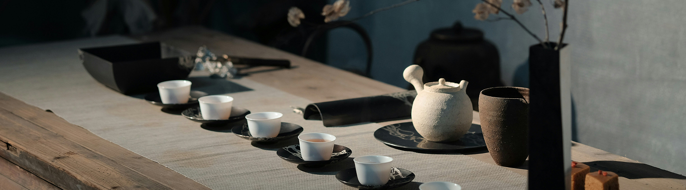

A Modern Korean
Tea Brand
다온차는 한국의 전통 재료에서 영감을 받아
오늘의 감각으로 재해석하는 티브랜드입니다.
조용히, 깊게 남다.
말없이 전해지는 온기가, 깊은 여운으로 이어집니다.

Warmth.
Harmony.
Presence.
따뜻함과 조화가 머무는 곳, 지금 이 순간을 온전히 느낄 수 있는 공간입니다.
다온은 단순한 음료를 넘어 마음이 편안해지는 온기를 전합니다. 보여주기 위한 화려함보다, 자연스럽게 스며드는 따뜻함을 지향합니다.
빠르게 흘러가는 일상 속에서 잠시 멈춰 숨을 고를 수 있는 시간을 제안합니다. 다온의 한 잔은 속도를 늦추고 나에게 집중하는 순간을 만들어줍니다.
맛, 향, 공간, 그리고 경험까지 모든 요소가 과하지 않게 어우러질 때 비로소 편안함은 완성됩니다. 다온은 그 균형을 가장 중요하게 생각합니다.